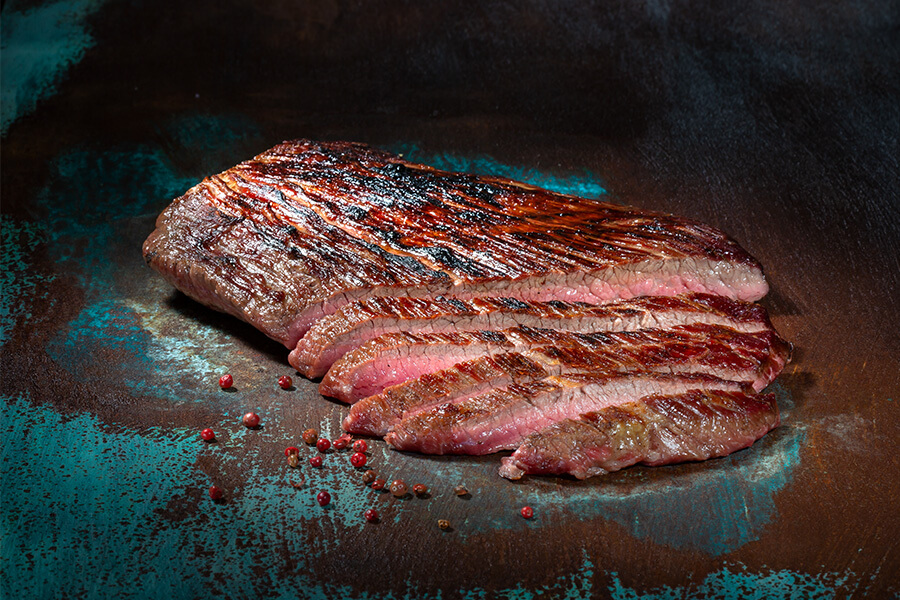

Flank steak

Description:
Cutting the steak immediately after cooking breaks all the rules on meat cookery, but in this recipe we do it intentionally in order to capture the juices and incorporate them into the dressing. Serve this grilled flank steak recipe with crusty bread to soak up the deliciousness.
Ingredients:
- 1 pint grape tomatoes, halved
- ½ cup chopped fresh cilantro
- ⅓ cup extra-virgin olive oil
- 1 small jalapeño pepper, seeded and sliced
- 2 teaspoons finely chopped garlic
- ½ teaspoon salt, divided
- 11-pound flank steak
- ½ teaspoon ground pepper
Steps:
-
Preheat grill to medium-high or heat a grill pan over medium-high heat.
-
Combine tomatoes, cilantro, oil, jalapeño, garlic and 1/4 teaspoon salt in a medium bowl; set aside.
-
Season steak with the remaining 1/4 teaspoon salt and pepper. Grill until an instant-read thermometer inserted in the center reads 125 degrees F for medium-rare, 3 to 5 minutes per side.
-
Transfer the steak to a clean cutting board, preferably one with grooves for collecting juices, and thinly slice across the grain. Divide the slices among 4 plates. Drizzle any juices that have accumulated on the cutting board over the steak and top with the tomato salad.